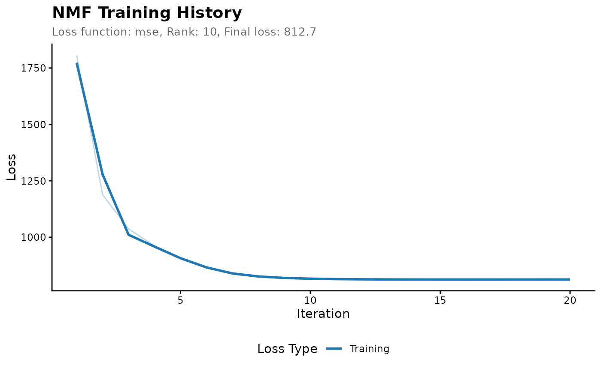
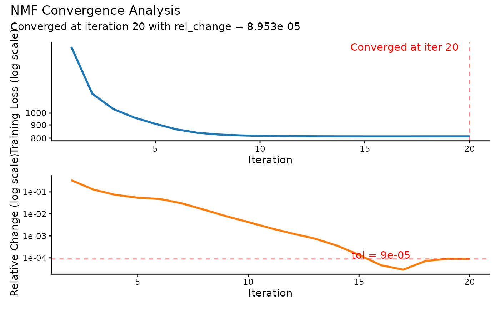
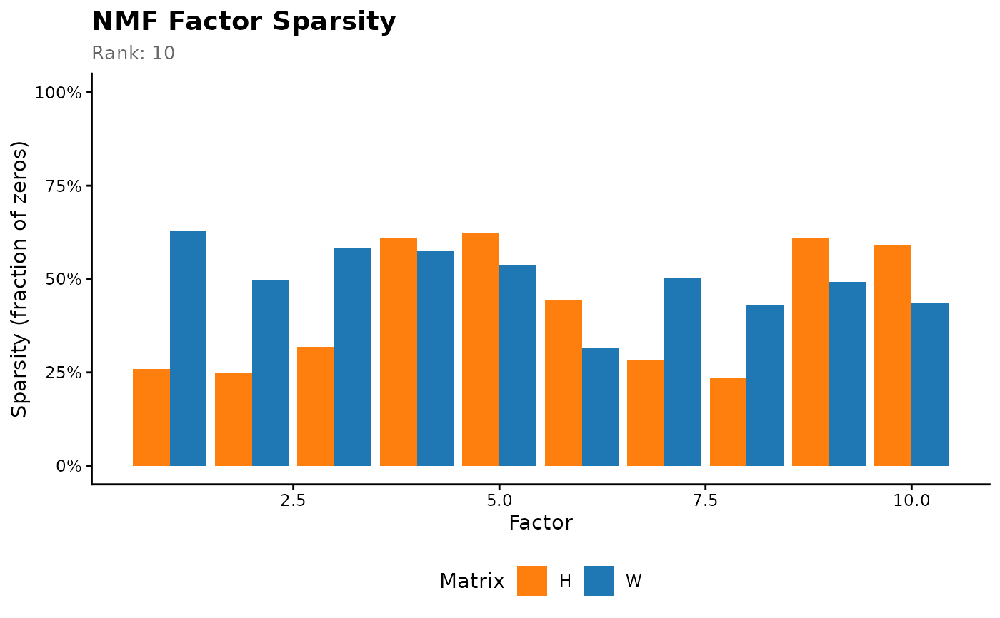

TensorBoard-style visualization of NMF training dynamics, convergence analysis, and factor diagnostics. Provides multiple plot types for comprehensive model analysis.
Arguments
- x
object of class "nmf"
- type
plot type: - "loss": Loss components over iterations (default) - "convergence": Log-scale loss convergence - "regularization": Regularization penalty contributions - "sparsity": Factor sparsity patterns
- smooth
apply smoothing (LOESS) for noisy curves (default TRUE)
- span
smoothing span for LOESS (default 0.3)
- log_scale
use log scale for y-axis (default FALSE, auto TRUE for "convergence")
- interactive
create interactive plotly plot (default FALSE)
- theme
ggplot2 theme: "classic", "minimal", "dark" (default "classic")
- ...
additional arguments passed to specific plotting functions
Examples
# \donttest{
# Basic loss plot
model <- nmf(hawaiibirds, k = 10, track_loss_history = TRUE)
plot(model)

# Convergence analysis
plot(model, type = "convergence")

# Interactive plot
plot(model, type = "loss", interactive = TRUE)
# Compare multiple runs
models <- replicate(5, nmf(hawaiibirds, k = 10, track_loss_history = TRUE), simplify = FALSE)
plot(models[[1]], type = "sparsity")

# }